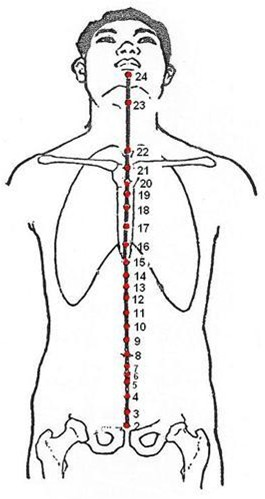

Oceanul energiilor Yin — regenerarea și calmul
Vasul de Concepție (Ren Mai) nu are o oră fixă de maxim, fiind un meridian extraordinar care „adună” toate energiile Yin ale corpului. El este rădăcina hrănirii și a regenerării, esențial pentru ciclul menstrual, sarcină, fertilitate și pentru starea de relaxare profundă. Un Ren Mai armonios aduce pace interioară, încredere și capacitatea de a crea.
Energie, rol & elemente asociate
☯Tip energetic
- Meridian extraordinar Yin — Ren Mai (任脉): „Vasul Concepției” sau „Vasul Responsabilității”. Este cel mai important dintre cele 8 meridiane extraordinare, controlând toate meridianele Yin ale corpului.
- Pereche funcțională: Vasul Guvernator (Du Mai). Împreună, Ren Mai și Du Mai formează axa centrală Yin-Yang a corpului, circulând Qi-ul în față (Ren) și în spate (Du).
- Rol: „Oceanul meridienelor Yin” — hrănește, răcorește și calmează toate structurile Yin (sânge, fluide, organe Yin).
- Element: Nu este asociat direct unui element, ci principiului universal Yin. Culoare: argintiu / albastru-pal.
🌊Funcții esențiale
- Controlează toate meridianele Yin: Reglează fluxul Qi-ului și sângelui în canalele Yin, asigurând nutriția și regenerarea.
- Centrul reproducerii și al regenerării: Guvernează uterul, ciclul menstrual, sarcina, fertilitatea și funcțiile sexuale (atât la femei, cât și la bărbați).
- Armonizează Yin-ul și Yang-ul: Prin poziția sa anterioară (față), completează Yang-ul posterior al lui Du Mai, menținând echilibrul corpului.
- Reglează fluidele și secrețiile: Influențează saliva, transpirația, secrețiile vaginale și urina.
- Ancorează spiritul (Shen) și calmul interior: Un Ren Mai armonios conferă pace, încredere și capacitatea de a crea (idei, proiecte, viață).
🔗Conexiuni cu celelalte meridiane
- Se conectează cu toate meridianele Yin la nivelul abdomenului și toracelui (prin puncte precum RM-3, RM-4, RM-6, RM-12, RM-17).
- Întâlnește Vasul Guvernator (Du Mai) la nivelul perineului (RM-1) și al buzelor (RM-24).
- Întâlnește Vasul Penetrant (Chong Mai) la RM-1, formând baza energetică a pelvisului.
- Punctul RM-12 (Zhongwan) este punctul de întâlnire cu Stomacul, Intestinul Subțire și Triplu Încălzitor.
Traseu & anatomie energetică

Între anus și rădăcina organelor genitale. Punct de întâlnire a celor trei meridiane extraordinare (Ren, Du, Chong).
Urcă pe linia mediană, traversând puncte esențiale pentru reproducere, urină și energie vitală. RM-4 (Guanyuan) este „poarta vitalității”.
RM-8 este buricul („poarta spiritului”). RM-12 (Zhongwan) este Mu-frontal al Stomacului și punct principal pentru digestie.
RM-14 Mu-frontal al Inimii. RM-17 (Danzhong) este Mu-frontal al Pericardului și „marea Qi-ului respirator”.
Urcă pe linia mediană a sternului, reglând respirația și gâtul.
Termină în canelura mentolabială (sub buza inferioară). Controlează salivația, vorbirea și gâtul.
🔗Conexiuni interne profunde
- Traseul profund către uter și organele genitale: De la RM-1, o ramură internă urcă prin interiorul bazinului, înconjurând uterul (la femei) și testiculele (la bărbați), apoi iese la suprafață la RM-2. Aceasta explică influența profundă a Ren Mai asupra fertilității și ciclului menstrual.
- Conexiunea cu vasele de sânge și fluide: Prin punctele abdominale, Ren Mai se conectează cu meridianul Rinichi (apă) și Splină (sânge), reglând echilibrul fluidelor și al sângelui.
- Ramura către cord și plămâni: De la RM-17 (Danzhong), o ramură internă urcă la inimă și plămâni, armonizând respirația și emoțiile.
- Întâlnirea cu Yang Ming (stomac și intestin gros): RM-24 (Chengjiang) este punct de întâlnire cu meridianele Yang Ming, conectând digestia cu partea superioară a Ren Mai.
Rol: „Oceanul Yin” — funcții fiziologice
🌊Oceanul meridienelor Yin
Ren Mai adună și distribuie energia tuturor canalelor Yin (plămân, inimă, pericard, splină, ficat, rinichi). Este rezervorul de Qi și sânge Yin, asigurând hrănirea și răcorirea organismului.
🌸Reglarea reproducerii și a ciclului menstrual
Ren Mai guvernează uterul („palatul copilului”) și ovarele, fiind esențial pentru concepție, sarcină, naștere și menopauză. Un Ren Mai armonios asigură cicluri regulate, fertilitate și o sarcină sănătoasă.
💧Metabolismul fluidelor și secrețiilor
Reglează saliva, transpirația, secrețiile vaginale, urina și lichidul sinovial. Dereglările produc uscăciune (deficit Yin) sau secreții excesive (umiditate).
🧘Ancorarea Shen-ului și calmul interior
Prin legătura cu inima (RM-14) și cu centrul energetic (RM-6, RM-4), Ren Mai stabilizează spiritul, reduce anxietatea și oferă sentimentul de siguranță și pace.
🍚Armonizarea centrului (digestie)
RM-12 (Zhongwan) este punctul principal pentru toate tulburările digestive. Ren Mai reglează ascensiunea și coborârea Qi-ului stomacal, prevenind greața, refluxul și balonarea.
💞Capacitatea de a crea și de a da viață
Ren Mai este asociat cu creativitatea, atât biologică (copii), cât și artistică sau intelectuală. Un Ren Mai deschis permite materializarea ideilor și a proiectelor.
Blocaje & indicații terapeutice
⚠️Tipare patologice principale
- Deficiență de Qi / Yin (hipofuncție): Oboseală cronică, vitalitate scăzută, ciclu menstrual neregulat sau absent, infertilitate, frigiditate, uscăciune vaginală, senzație de gol interior, piele uscată, tulburări de vorbire (voce slabă, bâlbâială).
- Stagnare de Qi sau sânge (blocaj): Dureri abdominale fixe, hernii, dismenoree, chisturi ovariene, fibroame uterine, senzație de greutate în zona inghinală, durere în piept.
- Umezeală-căldură în Ren Mai: Leucoree abundentă galben-verzuie, prurit vulvar, cistită, infecții genitale, miros neplăcut, urinare dureroasă.
- Manifestări pe traiect: Dureri în abdomen și torace pe linia mediană, senzație de nod în gât, durere în perineu, incontinenta urinară sau retenție.
🏥Indicații terapeutice generale
- Ginecologie și obstetrică: Dismenoree, amenoree, menoragie, infertilitate, sindrom premenstrual, endometrioză, prolaps uterin, menopauză, sarcină (cu precauție), lactație insuficientă.
- Urologie și nefrologie: Cistită, retenție urinară, incontinență, enurezis, edeme, litiază renală.
- Andrologie: Impotență, ejaculare precoce, spermatorree, prostatită, infertilitate masculină.
- Digestive: Gastrită, ulcer, reflux, balonare, constipație, diaree, sindrom de colon iritabil.
- Respiratorii și ORL: Astm, tuse cronică, răgușeală, faringită, sinuzită (prin conexiunea cu plămânii).
- Psihice și neurologice: Anxietate, insomnie, depresie, labilitate emoțională, bâlbâială, apatie, lipsă de încredere.
- Terapie generală: Oboseală cronică, imunitate scăzută, convalescență post-chirurgicală, epuizare.
Ren Mai — calmul interior, încrederea și creativitatea
Vasul de Concepție este sediul păcii interioare, al stării de relaxare autentică și al capacității de a crea. El reprezintă conexiunea cu sinele profund, cu forța hrănitoare feminină (indiferent de gen) și cu abilitatea de a materializa idei, proiecte sau viață. Un Ren Mai armonios conferă încredere în sine, deschidere, vitalitate și un sentiment profund de siguranță. Dezechilibrat, duce la labilitate emoțională, frigiditate (emoțională sau sexuală), anxietate cronică, dificultăți de vorbire și senzația de a fi copleșit de viață.
Atribute psiho-emoționale ale Vasului de Concepție
✅Atribute pozitive — Ren Mai în armonie
- Calm interior profund, relaxare autentică
- Încredere în sine, deschidere, lipsă de frică socială
- Armonie, unitate între corp, minte și spirit
- Vitalitate, capacitatea de a crea (idei, proiecte, artă)
- Sentimentul de a fi în control (dar nu de a controla)
- Prezență („aici și acum”), pace, liniște
⚠️Atribute negative — Ren Mai dezechilibrat
- Labilitate psihică, instabilitate emoțională
- Frigiditate emoțională (incapacitate de a te conecta)
- Trac, nervozitate, anxietate socială
- Tulburări de vorbire (bâlbâială, voce slabă, afazie)
- Voință slabă, incapacitate de a duce proiectele la final
- Senzația că te îneci în evenimente, epuizare, depresie
- Incapacitatea de a găsi pacea și centrul interior
Manifestări psihice în funcție de tipul energetic
↓Deficit de Qi / Yin (Ren Mai secat) — lipsa hrănirii interioare
Labilitate psihică, trac paralizant, nervozitate cronică, tulburări de vorbire (bâlbâială, voce șoptită), voință extrem de slabă. Senzația că te îneci în evenimentele vieții, că nu ai energie pentru a te susține. Depresie profundă, senzația de cufundare în întuneric, lipsă de vitalitate. Incapacitatea de a găsi pacea, de a te centra. Persoana se simte neacceptată, neglijată emoțional, fără „rădăcini” Yin.
↑Exces (stagnare, căldură-umezeală) — agitație și blocaj emoțional
Iritabilitate cronică, sentiment de constricție în piept, dificultate de a te relaxa, hipervigilență. Poate fi însoțită de secreții excesive (leucoree, transpirații) și senzație de greutate în pelvis. Frigiditate emoțională paradoxală: detașare aparentă, dar cu accese de agitație. Trac și bâlbâială în situații de stres, dar și irascibilitate.
Dinamica arhetipală: Ren Mai & relația cu părinții
👪Relația cu principiul matern (Yin) — hrănirea și acceptarea
- Armonie: Capacitatea de a primi iubire necondiționată, de a te simți hrănit emoțional și acceptat așa cum ești. Sentimentul de siguranță de bază, de „acasă” interioară. Relație sănătoasă cu mama și cu propriul feminin interior.
- Dezechilibru ușor: Nevoie de reasigurare, ușoară teamă de abandon. Dificultate în a te simți complet iubit. Compensează prin a da îngrijire excesivă celorlalți.
- Dezechilibru moderat: Sentiment de a nu fi fost suficient de hrănit emoțional de către mamă. Senzație de gol interior, nesiguranță cronică. Tendința de a te retrage din relații sau de a deveni exagerat de dependent.
- Dezechilibru sever: Traumă legată de abandon, respingere sau neglijare maternă. Incapacitatea de a primi iubire, senzația că nu meriți să fii iubit. Blocaj profund în a te lăsa hrănit, atât fizic cât și emoțional. Vulnerabilitate la depresie și anxietate de atașament.
Instrument de evaluare a Vasului de Concepție (Ren Mai)
Glisați pe bara colorată sau utilizați meniul dropdown pentru a selecta starea energetică. Profilul complet — fiziologic, nutrițional, emoțional și terapeutic — se afișează imediat. Corelați cu măsurătorile de biorezonanță și cu istoricul de vitalitate, ciclu menstrual, fertilitate și calm interior.
Evaluare energetică — Vasul de Concepție (Ren Mai)
Selectați nivelul observat: glisați pe bară, trageți indicatorul sau utilizați meniul.
Vasul de Concepție (Ren Mai) — 24 puncte RM (selecție)
Tabel cu localizare de precizie, categorii funcționale, funcții principale și indicații terapeutice detaliate pentru punctele cheie ale acestui meridian extraordinar. RM-4 (Guanyuan), RM-6 (Qihai) și RM-12 (Zhongwan) sunt puncte de tonifiere majoră.
| Punct | Localizare | Categorie | Funcții principale | Indicații detaliate |
|---|---|---|---|---|
| RM-1 Huiyin 会阴 | La punctul de mijloc între anus și rădăcina scrotului (bărbat) sau între anus și comisura posterioară a labiilor mari (femeie). | Întâlnire Ren, Du, Chong |
| Comă, sincopă, epilepsie, insolație, retenție urinară acută, enurezis, prurit vulvar, prolaps rectal sau uterin, hernie, hemoroizi, prostatită, disfuncție erectilă. ⭐ Punct important în meditație. |
| RM-3 Zhongji 中极 | Pe linia mediană, 4 cun sub ombilic. | Mu-frontal al Vezicii Urinare |
| Cistită acută, retenție urinară, enurezis, impotență, ejaculare precoce, infertilitate (ambelor sexe), dismenoree, amenoree, leucoree, prolaps uterin, prostatită. ⭐ Punct esențial în ginecologie și urologie. |
| RM-4 Guanyuan 关元 ⭐⭐ | Pe linia mediană, 3 cun sub ombilic. | Mu-frontal al Intestinului Subțire Punct de tonifiere Yang |
| Astenie cronică, epuizare, emaciere, tuberculoză, diaree cronică, prolaps, impotență, infertilitate, spermatorree, leucoree, menoragie, amenoree, retenție urinară, insomnie din vid de Yang. ⭐ Punct suprem pentru longevitate. |
| RM-6 Qihai 气海 ⭐⭐ | Pe linia mediană, 1.5 cun sub ombilic. | Marea energiei |
| Oboseală cronică, imunitate scăzută, distensie abdominală, diaree, constipație atomică, edeme, retenție urinară, enurezis, spermatorree, impotență, prolaps uterin, dismenoree, anemie, astenie post-chirurgicală. |
| RM-8 Shenque 神阙 | În centrul ombilicului. | Poarta spiritului Contraindicație acupunctură |
| Colaps post-AVC, șoc, sincopă, transpirații reci, diaree severă, prolaps rectal, incontinență urinară, edeme. Se tratează numai cu moxibustie (sare, ghimbir). |
| RM-12 Zhongwan 中脘 ⭐⭐ | Pe linia mediană, 4 cun deasupra ombilicului. | Mu-frontal al Stomacului Întâlnire cu San Jiao |
| Gastrită acută/cronică, ulcer, reflux, hernie hiatală, indigestie, balonare, vărsături, sughiț, inapetență, icter, diabet tip 2 (deficiență splină), diaree, constipație, astenie postoperatorie, anxietate cu simptome digestive. ⭐ Cel mai important punct digestiv. |
| RM-14 Juque 巨阙 | Pe linia mediană, 6 cun deasupra ombilicului (sub procesul xifoid). | Mu-frontal al Inimii |
| Angină pectorală, palpitații cardiace, anxietate, atacuri de panică, insomnie, amnezie, depresie psihotică, tulburare bipolară, vărsături nervoase, sughiț psihogen, manie, epilepsie, nevroză cardiacă. |
| RM-17 Danzhong 膻中 ⭐⭐ | Pe linia mediană, la nivelul celui de-al 4-lea spațiu intercostal (între sfârcuri). | Mu-frontal al Pericardului Marea Qi-ului respirator |
| Astm bronșic (toate formele), bronșită cronică, tuse convulsivă, dispnee, angină pectorală funcțională, palpitații nervoase, hipogalactie (lapte insuficient), anxietate toracică, senzație de nod în gât (globus hystericus). ⭐ Punct esențial pentru patologia respiratorie și emoțională toracică. |
| RM-22 Tiantu 天突 | În centrul fosei suprasternale (incizura jugulară). | Întâlnire cu Rinichiul |
| Astm acut, criză de tuse convulsivă, bronșită asmatică, spasm laringian, disfagie, gușă, globus, vomă laringiană. 🔥 Punct major pentru urgențe respiratorii. |
| RM-23 Lianquan 廉泉 | Deasupra osului hioid, în depresiunea de la marginea superioară a hioidului. | Reglare limbă și salivă |
| Sialoree, hipersalivație post-AVC, limbă rigidă (anartrie), afazie motorie, paralizie facială, dificultate la înghițire, răgușeală din deficiență renală. |
| RM-24 Chengjiang 承浆 | În centrul șanțului mentolabial (între buza inferioară și bărbie). | Întâlnire Ren Mai și Yang Ming |
| Paralizie facială periferică (devierea gurii), tremor al buzelor, salivare excesivă (noaptea), gingivită, durere de dinți inferiori, cheilite, ulcerații bucale, disfazie ușoară. |
| ※ Vasul de Concepție are în total 24 de puncte. Tabelul prezintă o selecție reprezentativă a punctelor cheie. Toate punctele sunt conforme cu canoanele MTC. | ||||
Protocoale de autoterapie — Hrănirea Yin-ului și calmul interior
Tehnicile de mai jos pot fi practicate zilnic, de preferință dimineața devreme sau seara înainte de culcare. Acestea hrănesc Ren Mai, calmează mintea și susțin fertilitatea și vitalitatea.
Tehnici de acupresură & autoterapie
RM-4 Guanyuan — moxa sau presiune profundă ⭐⭐
Localizați punctul la 3 degete transverse sub ombilic (pe linia mediană). Aplicați moxibustie indirectă (dacă aveți acces) sau presiune fermă cu policele timp de 2-3 minute, dimineața și seara. Tonifică Yang-ul vital, întărește rinichiul, tratează infertilitatea și epuizarea.
RM-6 Qihai — marea energiei
La 1.5 cun sub ombilic (aproximativ două degete). Masați circular în sensul acelor de ceasornic timp de 2 minute, dimineața. Reface Qi-ul original, combatte oboseala cronică, întărește imunitatea. Excelent pentru convalescență.
RM-12 Zhongwan — centrul digestiv
La 4 degete deasupra ombilicului, pe linia mediană. Masați ușor timp de 1-2 minute după mese. Ameliorează balonarea, refluxul, greața, indigestia. Punctul principal pentru orice problemă digestivă.
RM-17 Danzhong — deschiderea pieptului
În centrul sternului, la nivelul sfârcurilor. Apăsați ușor sau masați circular timp de 1 minut, mai ales când simțiți anxietate sau constricție toracică. Calmează palpitațiile, astmul emoțional, senzația de nod în gât.
Masajul abdominal (Qi gong al centrului)
Cu palma dreaptă peste ombilic, masați ușor abdomenul în sensul acelor de ceasornic timp de 5 minute dimineața și seara. Apoi masați în sens invers. Armonizează Ren Mai, stimulează digestia, calmează mintea. Este un ritual de bază în medicina tradițională chineză.
Nutriție pentru Ren Mai (hrănirea Yin-ului)
Alimente care hrănesc Yin-ul și sângele: Oase suculent (bulion de oase), ficat de vită (o dată pe săptămână), ouă, lapte de migdale, semințe de susan negru, migdale, nuci, curmale roșii (jujube), pere coapte, miere. Tonifiere Qi (deficit): Orez negru, quinoa, cartof dulce, morcov, dovleac, pui fiert, gălbenuș de ou. Evitați: Alimente reci, crude, băuturi cu gheață, excesul de zahăr și lactate (produc umezeală). Ceaiuri calmante: mușețel, tei, roiniță.
Suplimente & fitoterapie pentru Ren Mai
Tonifiere Qi și Yin: Rehmannia (Shu Di Huang — pentru sânge și Jing), Astragalus (pentru Qi), Dang Gui (Angelica — pentru sânge feminin). Calmare Shen: Magneziu bisglicinat (300-400 mg seara), complex B, L-teanină, Ashwagandha (tonifiant adaptogen). Pentru ciclu menstrual și fertilitate: Vitamina D3, Zinc, Seleniu, Omega-3, Vitex (chasteberry — sub control). Ceaiuri: Frunze de zmeur, trifoi roșu, urzică.
Meditația „Ren Mai — râul vieții"
Așezat confortabil, plasați mâna stângă pe abdomenul inferior (RM-4/RM-6) și mâna dreaptă pe centrul sternului (RM-17). Inspirați adânc, vizualizând o lumină argintie care urcă de la perineu la gură, ca un râu liniștit. La expir, lumina coboară înapoi. 10 minute, zilnic. Hrănește Ren Mai, calmează anxietatea și reconectează cu esența feminină interioară.
Protocol clinic — combinații de acupunctură
🏥Combinații clinice recomandate
- Deficiență de Yang / Qi (oboseală cronică, infertilitate, prolaps): RM-4 (Guanyuan) + RM-6 (Qihai) + ST-36 (Zusanli) + KD-3 (Taixi) + BL-23 (Shenshu) — toate cu moxa.
- Deficiență de Yin (uscăciune, menopauză, insomnie): RM-4 (Guanyuan) + KD-6 (Zhaohai) + SP-6 (Sanyinjiao) + HT-7 (Shenmen).
- Stagnare de Qi / sânge în pelvis (dismenoree, fibroame, hernii): RM-3 (Zhongji) + RM-6 (Qihai) + SP-6 + LR-3 (Taichong) + SP-10 (Xuehai).
- Umezeală-căldură în Ren Mai (leucoree, infecții genitale): RM-3 + RM-5 (Shimen) + SP-9 (Yinlingquan) + LR-2 (Xingjian) + LI-11 (Quchi).
- Anxietate, insomnie, palpitații (Ren Mai agitat): RM-14 (Juque) + RM-17 (Danzhong) + PC-6 (Neiguan) + HT-7 (Shenmen).
- Tulburări digestive (RM-12 ca punct principal): RM-12 (Zhongwan) + ST-36 + PC-6 + SP-4 (Gongsun).
💬Recomandări psiho-comportamentale — Cultivarea calmului și a hrănirii interioare
- Ritualul serii: Înainte de culcare, plasați o mână pe abdomenul inferior (RM-4) și una pe piept (RM-17). Respirați profund de 10 ori, simțind fluxul blând al Ren Mai. Spuneți-vă în gând: „Sunt în siguranță, sunt hrănit(ă), sunt în pace”.
- Terapie pentru traume de atașament: Lucrul cu nevoia de „hrănire” emoțională, vindecarea rănilor legate de mama sau figura maternă. Exerciții de „reparentare” interioară și de cultivare a compasiunii față de sine.
- Creativitate și materializare: Păstrați un jurnal în care scrieți zilnic un proiect mic pe care doriți să-l finalizați. Ren Mai este meridianul care transformă ideile în realitate.
- Băi calde și masaj abdominal: O baie caldă (nu fierbinte) cu sare de mare relaxează Ren Mai. După baie, masaj abdominal în sensul acelor de ceasornic timp de 5 minute.
- Muzică pentru Ren Mai: Frecvențe 432 Hz, muzică calmă, sunete de apă curgătoare, mantre liniștitoare („Om”, „Aum”).
Indicații de urgență
Hemoragii uterine masive, sarcină ectopică ruptă, comă — necesită evaluare medicală de urgență. Acupunctura este complementară. Punctele RM-4, RM-6 și RM-8 (cu moxa) pot fi utilizate în colaps sau epuizare severă ca adjuvant, dar nu înlocuiesc tratamentul alopat.